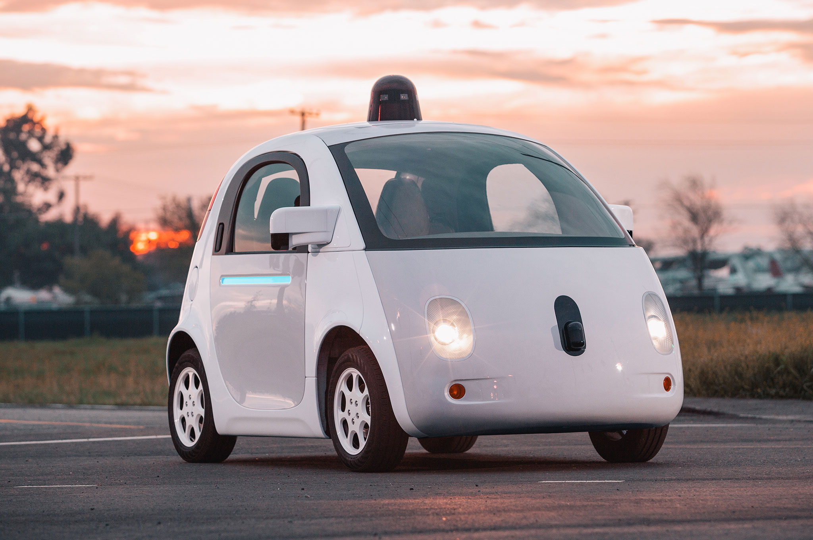

Introduction
A self driving car is a robotic vehicle that is designed to travel between destinations without a human operator. To qualify as fully autonomous, a vehicle must be able to navigate without human intervention to a predetermined destination over roads that have not been adapted for its use.
Self-driving vehicles are not yet legal on most roads. In June 2011, Nevada, US became the first jurisdiction in the world to allow driverless cars on public roadways. Companies that are currently developing or testing driverless cars include Audi, BMW, Ford and Google.
Here’s how Google’s cars work:
- The “driver” sets a destination. The car’s software calculates a route and starts the car on its way.
- A rotating, roof-mounted LIDAR (Light Detection and Ranging - a technology similar to radar) sensor monitors a 60-meter range around the car and creates a dynamic 3-D map of the car’s current environment.
- A sensor on the left rear wheel monitors sideways movement to detect the car’s position relative to the 3-D map.
- Radar systems in the front and rear bumpers calculate distances to obstacles.
- Artificial intelligence software in the car is connected to all the sensors and has input from Google Street View and video cameras inside the car.
- The AI simulates human perceptual and decision-making processes and controls actions in driver-control systems such as steering and brakes.
- The car’s software consults Google Maps for advance notice of things like landmarks and traffic signs and lights.
- An override function is available to allow a human to take control of the vehicle.